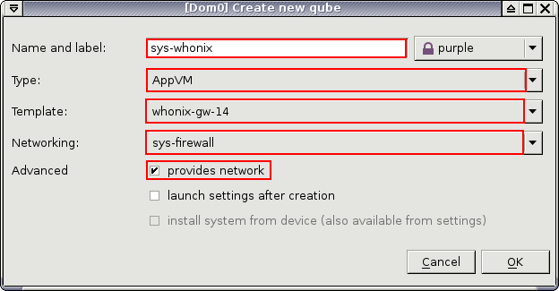

sys-whonix with capital W may be confusing. I don’t recommend using the same VM names with different capitalization even if that is possible.
1 Like
You don’t miss a thing. I thought I was being sneaky 
Luckily I didn’t upload those pics to the Whonix server.
When I create new screenshots (upload to server) I’ll update the pics in the above post as well.
2 Likes
I put them in anyway, since it’s better than 5-6 year old pics.
What’s left:
-
Replace all timesync images with sdwdate / sdwdate-gui where appropriate
-
Flash leak test (maybe add Panopticlick or browserleaks.com there also?)
-
Whonixcheck GUI updated pic and progress meter
-
Anything else badly needed?
2 Likes
I’ve been trying to make some changes to in the way I go about my workflow such as not jumping from older task to new ones. I’ve found work on each a little bit at a time is not the way to go. For the amount of time it put into Whonix I’m getting a fraction of what I should be getting done.
I haven’t forgotten about any of the tasks like screenshots (I have everything bookmarked)…I’m just doing a little personal restructuring.
Oh yah, not hanging out on the forum all the time is one of them. Its very distracting when working on my tasks. 
BTW I just looked and screenshots are next 
2 Likes
OK - I’ve fixed most of these. Still need:
- whonixcheck GUI & progress meter
- Flash leak tests
1 Like
New screenshots to be used for “Multiple Whonix-Workstations” chapter
Qubes Manager Clone Qube

Clone Qube-2 (Enter new qube name)

Create sys-whonix VM (Qubes-R4)

2 Likes
https://www.whonix.org/wiki/Tor_Browser#Tor_Browser_Internal_Updater could use a small a screenshot where it says the Torbutton icon will display a yellow triangle. Maybe even an animated gif showing the blinking if that is supported by our wiki?
Uploaded a few electrum screenshots for use with the forthcoming instructions. (already completed. will update the wiki tomorrow)
https://whonix.org/wiki/File:Electrum_select_server_manually.png
https://whonix.org/wiki/File:Electrum_use_proxy_socks5_.png
https://whonix.org/wiki/File:Electrum_select_server_automatically.png
2 Likes
Have your Whonix/firefox flash-plugin screenshot. Opted to shrink shot instead of cutting and pasting two shots together. It looked crappy.
Let me know if you can use this and I’ll upload to the Whonix server proper. It looks a bit small. If not I’ll go to plan “C” (not sure what that is  )
)

{kind=link}
{kind=link}
{kind=link}
//cc @torjunkie’s ocd
2 Likes
Yes please - thanks 
is there any links that needs screenshots ?
1 Like
{kind=link}
2 Likes
And already added to Screenshots page (or pending edits anyway). Thanks a lot!
Also thanks to @TNT_BOM_BOM for all the recent pics. Nice choices. I think we got most of the main links, but I will keep an eye out for other updates needed.
2 Likes
@TNT_BOM_BOM you asked recently about updated images needed (as you as the snapshot king!)
This page has 4 year old pics:
These Tor Browser pics below are too old and annoying. Can you please snapshot some Tor Browser 8.0 versions?
I’m sure there will be more, but that would be a nice start.
2 Likes
This is Windows malware OS , which i dont have space to install it nor i want to use it due to its time killing even after installation.
1 Like
https://www.whonix.org/wiki/Contribute#Answer_Questions
Join the Whonix User Forum.
The forums offers fine-tuned options to subscribe by e-mail. In each category
there is on the right side a symbol o .
( Edit | New Topic | o )
(Edit|New Topic| **o** ) could use a screenshot with an arrow pointing at the o and perhaps another screenshot with available forum subscription options.
Done.
This one i dunno how to produce it, hopefully i can remember to do not upgrade next time unless i take screenshot for it.
1 Like
Done! , although these images no more does exist with current updating mechanism:
https://www.whonix.org/wiki/File:Tor_Browser_Internal_Updater_Wizard.png
{kind=link}

^^^ i dont know exactly why it showing these broken image icons instead of links.
@mig5 any idea?
Edit: it needs space before i paste the link, kept one link with broken icon as example.
1 Like
Discourse probably sees the .png extension of the link and thinks ‘OK this is an image’. But in fact it’s not an image, it’s a MediaWiki page. So fails to embed a page as an image.
^ you can see above I paste https://www.whonix.org/w/images/0/05/Tor_Browser_Internal_Updater_Popup.png rather than the MediaWiki URL https://www.whonix.org/wiki/File:Tor_Browser_Internal_Updater_Popup.png and so it works.
Would just ignore. Not worth our while to try and fix in Discourse. Might report a bug upstream.
3 Likes
Thanks a lot. Much better.
I’ll fix that in the wiki.
1 Like